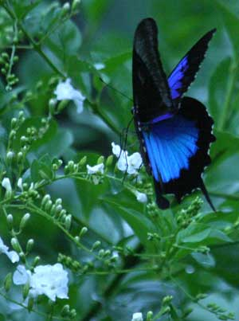
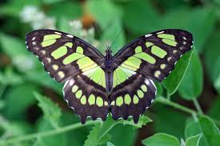
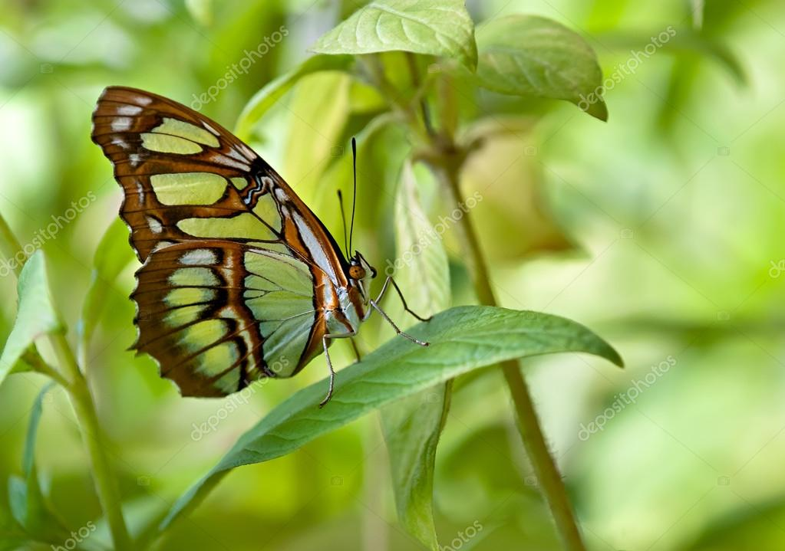

Mariposa Morfo Azul
Esta mariposa es la transformacion y la guia espiritual (negro) con la alegria, la prosperidad y realizacion de deseos (azul)
 Mariposa AzulMariposa Malaquita
La mariposa verde con negro representa la esperanza, equilibrio y la conexión con la naturaleza.
  Mariposa Malaquita